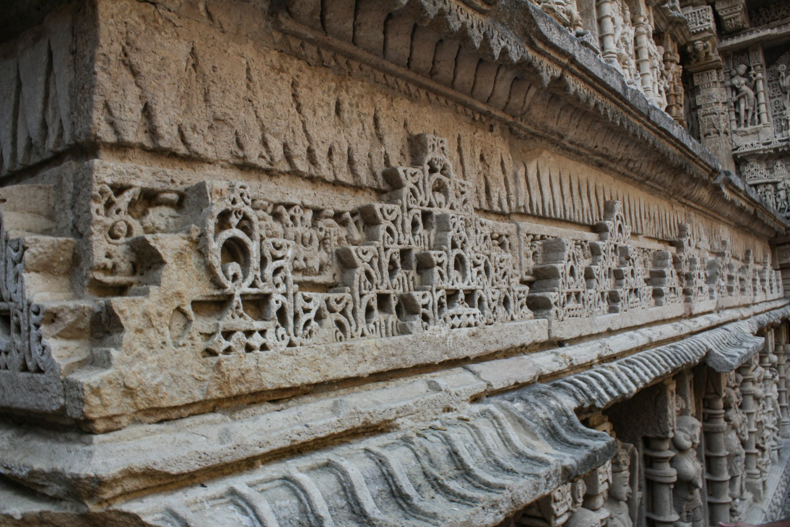
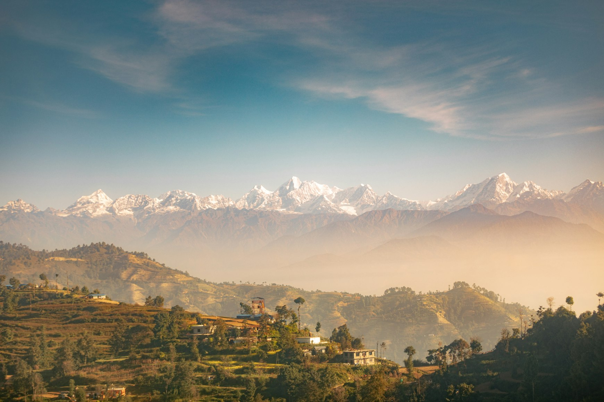
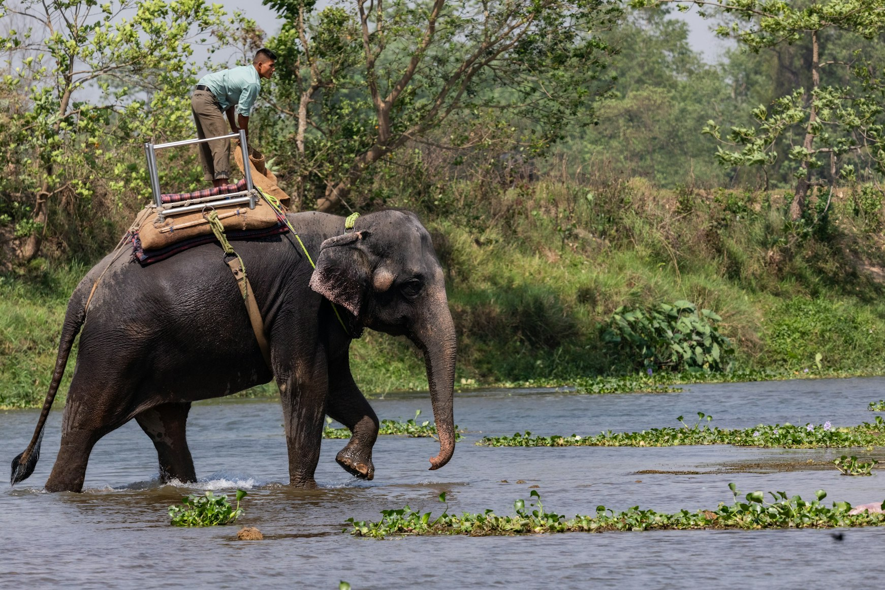
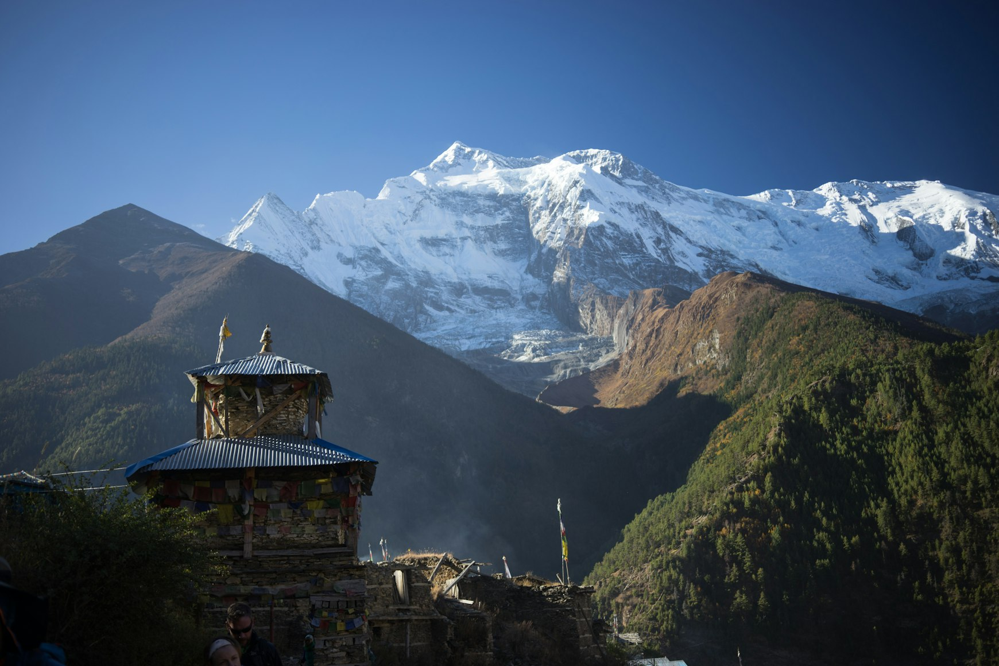

Patan can be visited year-round, but the feeling of the city changes dramatically depending on the season, the light, and even the humidity in the air. This is not the kind of destination with only one “perfect” month. Different periods reveal different sides of the city.
The most important thing to understand in advance is this: Patan is not about chasing bright sunshine at all costs. Its beauty works through atmosphere. Through soft light, mist hanging over the Kathmandu Valley, wet brick after rain, cold early-morning streets, and golden temple roofs glowing in the evening light.
That’s why not only the season matters here, but also the time of day.
Autumn — the Best Season for a First Visit to Patan

October — November
This is the most comfortable and popular period for traveling in Nepal.
After the monsoon season ends, the air becomes cleaner, the skies clearer, and the light especially soft. During this time, Patan feels more “open”: the brickwork looks brighter, the temples more defined, rooftop terraces fill with people, and the evenings become particularly beautiful.
Daytime temperatures usually stay around:
+20…+26°C
Mornings and evenings: +10…+15°C
This is ideal weather for long walks, rooftop breakfasts, walking routes between courtyards, evening squares, and slow travel without heat or exhaustion.
Autumn is when Patan is easiest to visually “read.”
There is one downside: this is high season. The Kathmandu Valley becomes busier with travelers, and popular rooftop cafés and boutique hotels are best booked in advance.
Winter — the Most Beautiful Light in the City

December — February
For many experienced travelers, this is the best season in Patan.
Yes, mornings can be cold. Especially early in the day, temperatures sometimes drop to:
+4…+7°C
During the day, temperatures are usually:
+15…+20°C
But winter is when the city becomes incredibly photogenic.
The air is dry and crystal clear. The light is low and cinematic. Morning shadows stretch longer. The brick appears darker and deeper. Rooftop cafés with hot tea start feeling especially cozy.
This is the season of slow walks, quiet mornings, museum days, courtyard cafés, and golden evening light.
Winter is when Patan feels most contemplative.
For your travel-writing aesthetic, this may be the best season of all.
The main thing is to bring warm clothing for mornings and evenings. In Nepal, winter often feels colder inside buildings than many travelers expect.
Spring — Soft Light and a Blooming City

March — April
Spring makes Patan feel more alive.
Flowers begin appearing, the air grows warmer, and the city feels less “wintery” and more energetic.
Temperatures:
Daytime: +22…+29°C
Evenings: +12…+18°C
This is a very good season for cafés, rooftop evenings, walking routes, photography, gastronomy, and long days outdoors.
But closer to May, the Kathmandu Valley becomes dustier and hotter, and the air less transparent.
Monsoon — the Most Atmospheric and Underrated Season

June — September
Most tourists avoid the monsoon season. And that is exactly why Patan becomes especially beautiful for people who love atmospheric cities.
Yes, it rains. Sometimes heavily. The streets become wet. The air feels heavy. The sky turns grey.
But during this period the brick becomes deeply saturated red, courtyards empty out, golden temples appear darker, streets reflect the light, and the city becomes quieter and more local.
Temperatures:
+24…+30°C
Humidity is high.
Monsoon Patan is the smell of rain on brick, rooftops beneath grey skies, mist in narrow alleys, tea in a courtyard café, and golden reflections on wet stone.
For photography and atmospheric travel, this is a remarkably strong season.
But it’s important to understand that walking can be less comfortable, some days will be rainy, and long walks are sometimes difficult.